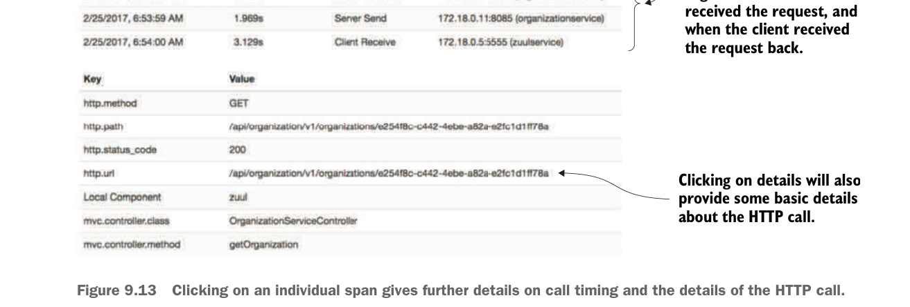
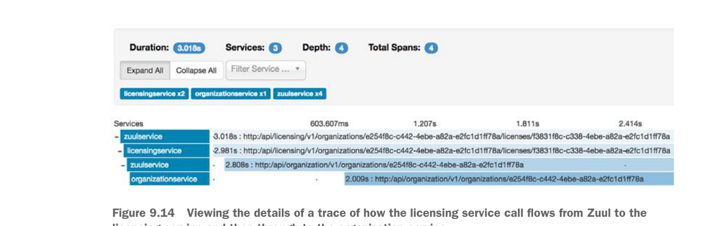

By clicking on the details, you can see when Zuul called the organization service, when the organization service received the request, and when the client received the request back.
Clicking on details will also provide some basic details about the HTTP call.
Clicking on an individual span gives further details on call timing and the details of the HTTP call.
9.3.6 Visualizing a more complex transaction
What if you want to understand exactly what service dependencies exist between service calls? You can call the licensing service through Zuul and then query Zipkin for licensing service traces. You can do this with a GET call to the licensing services http://localhost:5555/api/licensing/v1/organizations/e254f8c-c442-4ebe-a82a-e2fc1d1ff78a/licenses/f3831f8c-c338-4ebe-a82a-e2fc1d1ff78a endpoint.
Figure 9.14 shows the detailed trace of the call to the licensing service.

Viewing the details of a trace of how the licensing service call flows from Zuul to the licensing service and then through to the organization service